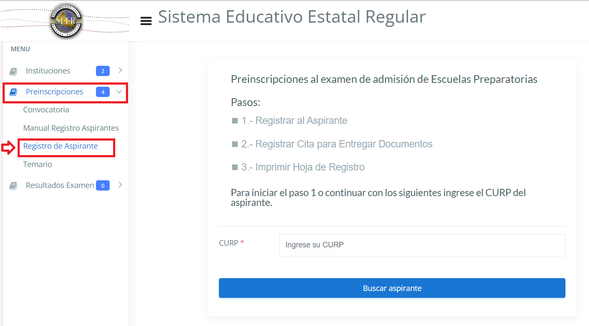

- Ingresa a la liga:
https://seer.gob.mx/siems/instituciones
- Selecciona del menuque se encuentra del lado izquierdo de la pagina la opción PREINSCRIPCIONES -> REGISTRO DE ASPIRANTE.

- Para iniciar el preregistro introduce tu CURP después deberán de capturar datos personales como: dirección, código postal, teléfono, secundaria de procedencia, padre o tutor y correo electronico. Seleccionar la Esc. Preparatoría "Francisco Martínez de la Vega" en la escuela donde desea presentar su examen de selección, despúes deberá de indicar otras dos escuelas como 2° y 3° opción, para en caso que no salga en las listas de aceptados, será reubicado en una de su 2° o 3 opción (todos los datos son obligatorios).
- Una vez capturada toda la información verficar que todo este correcto y dar enviar. Se mostrará una leyenda donde indica que los datos del(a) aspirante se recibieron correctamente. Dar clic en botón Continuar con el paso Registrar Cita para Entregar Documentos
- Ingresa nuevamente en mayusculas CURP del aspirante para validación de datos y dar clic en botón buscar aspirante
- Leer las instrucciones que aparecen en el inciso a y dar clic en botón Realizar la Cita aquí.
- Dar clic en el menú desplegable para elegir fecha y hora pra el Registro de Cita. A continuación, oprimir bóton Grabar.
- Para finalizar, imprima su hoja de registro que tendrá que presentar de forma impresa en la escuela el día y hora que agendó la cita. Dar clic en botón Imprimir Hoja de Registro
- Tendrá que presentarse de forma presencial la fecha y hora que eligó la cita en la escuela donde realizó el trámite con la Hoja de Registro impresa y la documentación señalada en ella. Uso obligatorio de cubrebocs y de las medidas de la sana distancia.